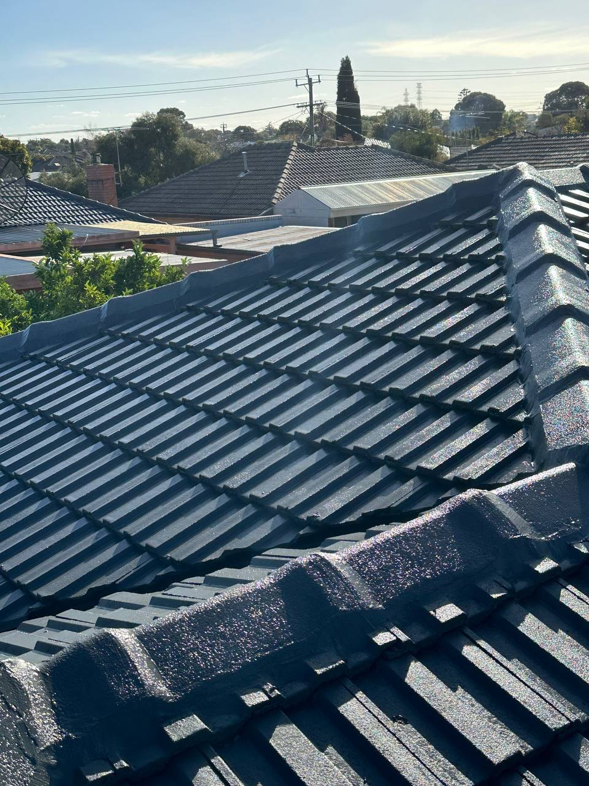
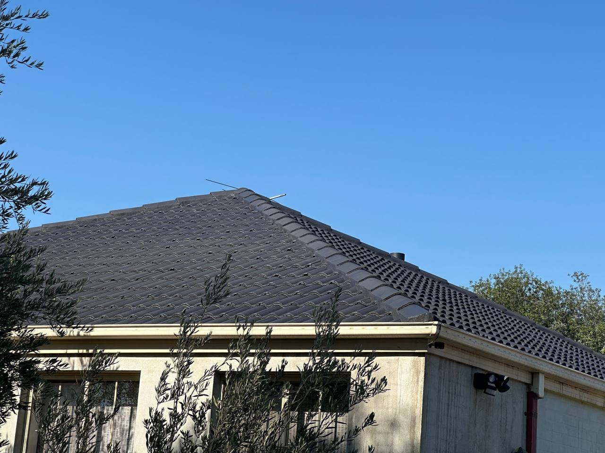
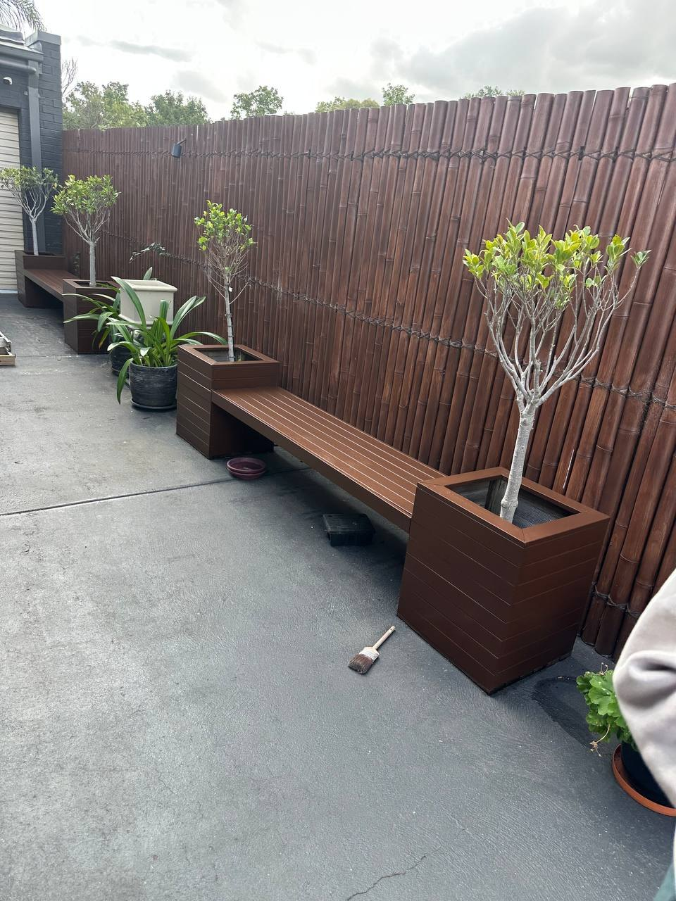
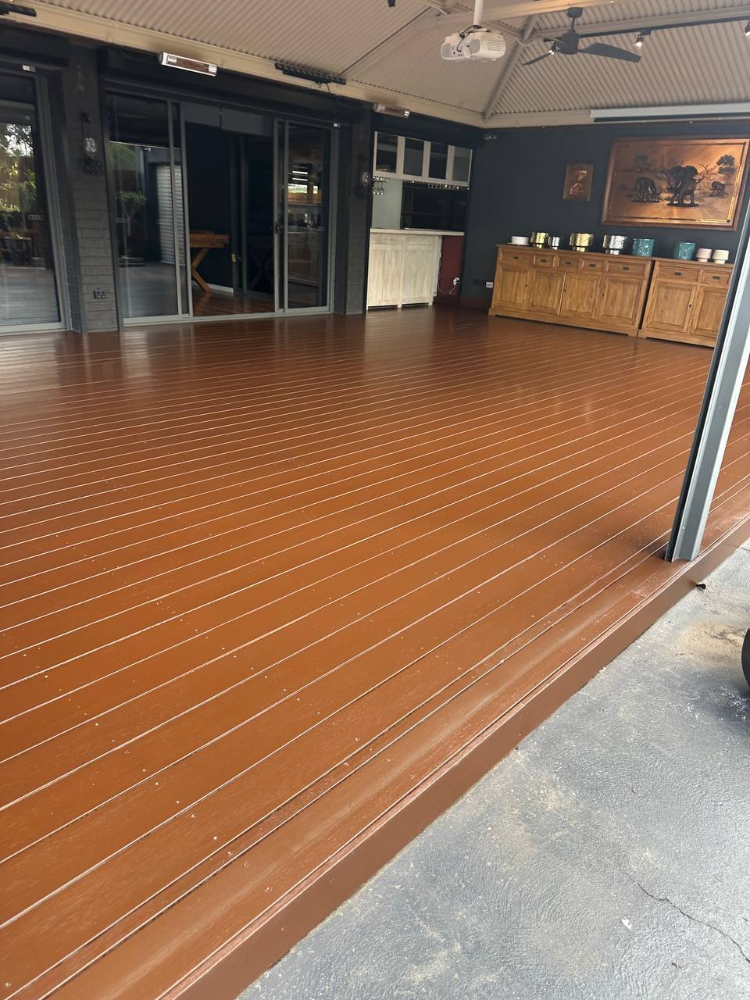

Interior Painting
Refresh walls, ceilings, doors and trims with a tidy, considered finish for your home or workplace.
Enquire ↗Melbourne home maintenance & painting
From roof restoration to interior painting and outdoor timber finishes, we help Melbourne homes look their best with practical, detail-focused workmanship.
Top Hat Home Maintenance Services
With 15 years of industry experience, Top Hat provides painting and home maintenance services across Melbourne. We take care with preparation, communicate clearly, and work towards a clean, considered finish suited to each property.
Whether you’re refreshing a room, restoring a tiled roof or updating an outdoor entertaining area, tell us what you have in mind and we’ll discuss the next steps.
Tell us about your projectWhat we do
From indoor refreshes to exterior maintenance, get in touch to discuss the work you need and the condition of your property.
Refresh walls, ceilings, doors and trims with a tidy, considered finish for your home or workplace.
Enquire ↗Exterior surfaces prepared and painted to help give your property a refreshed, well-maintained appearance.
Enquire ↗Roof maintenance, restoration and repair enquiries for tiled roofs. The work required is assessed for each property.
Enquire ↗Roof coating and colour refreshes to give suitable roof surfaces a renewed, consistent look.
Enquire ↗Refresh outdoor timber and other suitable surfaces with a finish that complements your outdoor space.
Enquire ↗Give suitable kitchen and storage cabinetry a new look without automatically replacing the existing units.
Enquire ↗Painting services for commercial properties and workspaces. Share your site, scope and timing to discuss options.
Enquire ↗Selected projects
A look at recent roof and outdoor surface work. These photographs were supplied by the business.




Experience you can discuss
Every property and job is different. We’ll discuss the scope, access, surface condition and timing before confirming what’s involved.
Where we work
Top Hat Home Maintenance Services takes enquiries from across Melbourne and its surrounding suburbs. Share your suburb and project details so we can confirm availability and whether the job is within our service area.
Check availabilityStart a conversation
Send through a few details and we’ll get back to you to discuss the job. For urgent enquiries, call directly.
Enquiries welcome 7 days a week. Ask about after-hours availability.
A few answers
We take enquiries from across Melbourne and surrounding suburbs. Let us know the property suburb so we can confirm availability.
Yes. Include each part of the job in your enquiry. We can discuss the scope and whether the work can be coordinated in one visit.
You can call any time to enquire. Actual after-hours attendance and availability depend on the job, location and scheduling, so please confirm by phone.
Pricing depends on the size and condition of the area, preparation required, materials, access and the scope of work. Contact us with a few details to discuss a quote.
Call or send an enquiry with your contact details, suburb and the work you have in mind. We’ll discuss the next steps and availability.